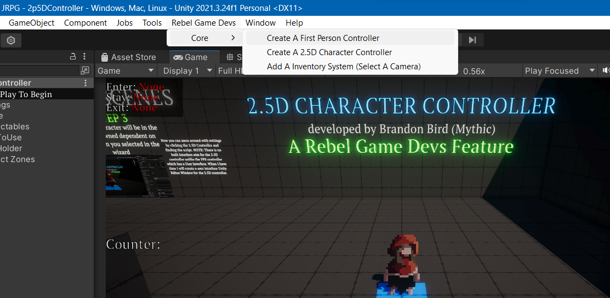

Documentation
Learning Scenes
Learning Scenes are scenes which demonstrate utility components/controllers, methods, and even full built prototypes for learning. You can find the folder in the Open Source Project Directory: Assets/RGD_Core/LearningScenes.
How To Incorporate In Your Own Scenes
Most learning scene featured component(s) are really easy to access and come with a setup wizard which you can find them under the tools tab bar --> RebelGameDevs/Core. All Learning Scenes have documentation on this very website which you can find under the header Learning Scenes.
Refer to the image below for more information.
